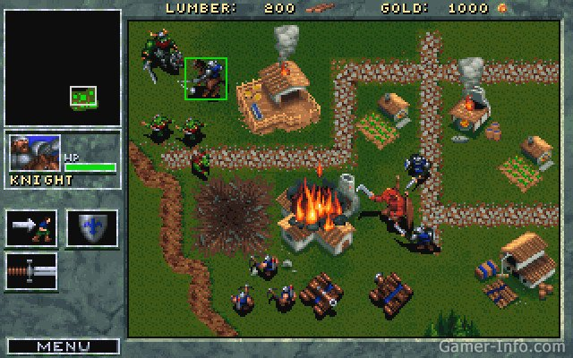
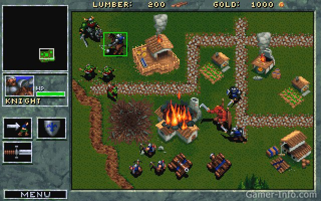

Не зря Blizzard за многие годы заработала репутацию компании, которая делает хорошие стратегии. Перед тем как преподнести миру идеально отшлифованную StarCraft, серия игр Warcraft успела пронестись по всей Земле и завоевать множество поклонников. Как и всегда, разработчики Blizzard смогли создать продукт очень высокого уровня. На время своего выхода, игра выглядела просто великолепно, а хорошо сбалансированная система и интересные уровни могли удержать за игрой любого геймера.
 
